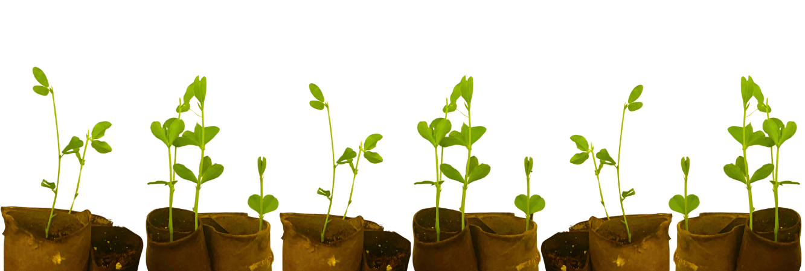

.jpg)
Growing Sweet Peas
It's starting to get warmer, the days are getting longer, and it's almost time to start gardening! As spring has offically started, I thought it would be a great time to write about my experience planting Sweet Peas.
At the end of march my sister and I decided to try growing Sweet Pea seeds again after a somewhat unsuccessful attempt last spring. We planted two different varietys: "regular" and Mammoth. The Mammath Sweet Peas are can supposedly grow to be over six feet tall, some hitting eight feet! Both kinds vary in color, but it will be a surprise to us what colors we get since each plant produces mulitple different colored flowers. The Mammoth variety we got has warmer colors and the regular one has cooler. We planted a few seeds of each next to eachother and the rest separated, it will be interesting to see what happens with the mixed seeds. As of today they are about 4-6inchs tall and almost ready to be planted outside (pictured below). We decided to start growing them early and inside this year, as we tried to grow Sweet Peas last spring and they did bloom, but did so late in the season and looked very weak. If you want to plant your own Sweet Peas here are some helpful tips i've learned:- Figure out what zone you are in and when the last frost is. Sweet Peas are pretty resilient and can withstand being planted before the last frost, but i've found it's best to grow them inside and plant outdoors after the last frost
- Grow your Sweet Peas in toilet or paper towel rolls. Not only are you recycling these rolls, you also save money on containers to hold them in whilst indoors. It's even better than store-bought containers, because you can plant the cardboard rolls directly in the ground. No need to transplant or remove the Sweet Peas!
- Once your Sweet Peas have grown 2-3 sets of leaves, pinch off the top-pinching just above the second set of leaves. This promotes offshoots to grow, which makes the plant produce more flowers and appear bushier.
- Do not pinch or cut the stems before the second leaf has grown. Doing this will stunt or cause your plant to die. If your unsure if your plant has grown its second set of leaves or feel unsure, another rule of thumb is to wait until they are about 5 inches tall.
- Sweet Peas are a climbing plant, so make sure to have a trellis or some king of structure for them to attach to. Without proper support they will droop.
- Sweet Peas thrive in soil that has been treated with compost or fertilizer, they grow long roots that dig deep into the soil so when digging out the holes for the plants place some fertilizer or compost at the bottom for them.
- They are generally resistant to weather and climate conditions, but do not do their best in direct sun. It is advised to plant them where it will be slightly cooler and the soil will be cool as well. You can place mulch around the Sweet Peas to ensure the soil beneath will not become too warm for the plants.
Happy Gardening!
